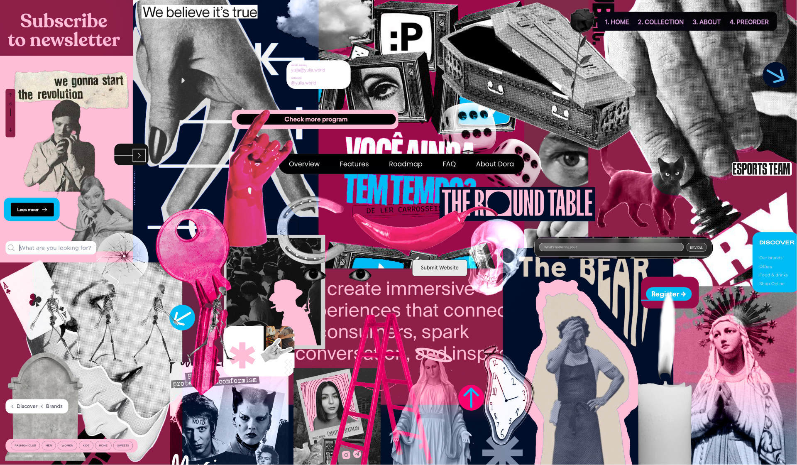
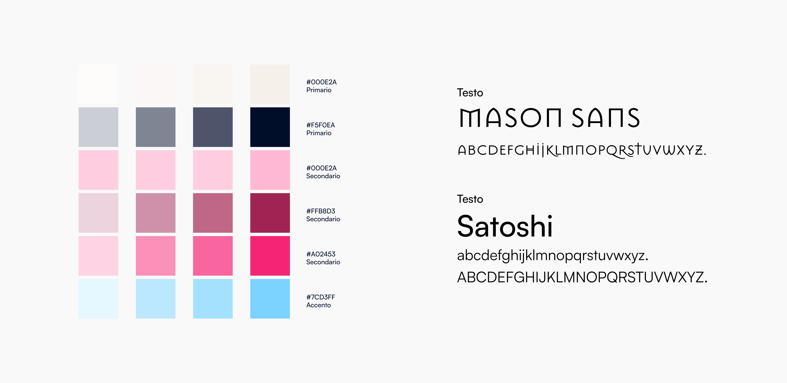
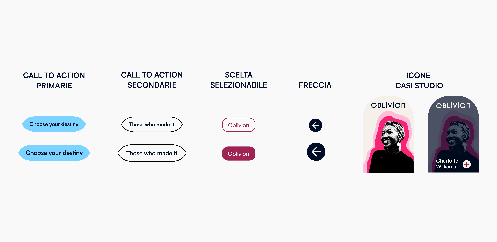
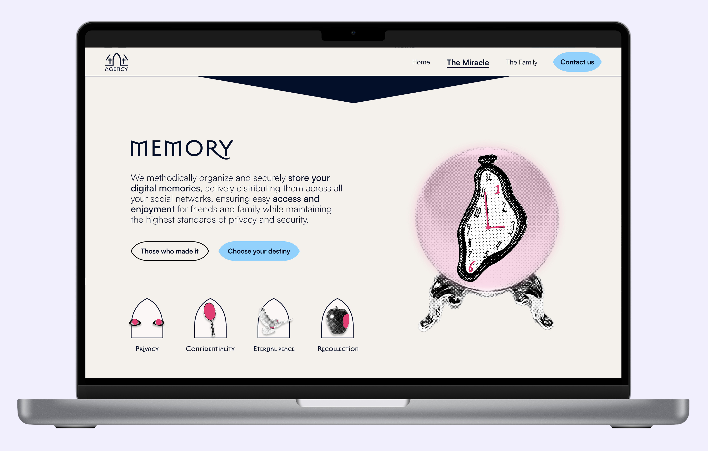

Speculative & UX / UI Design · 2024
404 Agency
The greatest post-mortem digital legacy service, up to date with the times
404 Agency is a speculative service-design project focused on digital-legacy management post mortem. The project addresses an increasingly urgent question: what happens to our social profiles, our words, our images when we are no longer here?
The agency's vision is to give value to the phase of life in which everything is "let go", allowing anyone to leave a positive memory even after death — through the control of digital heritage and the management of social-media profiles after passing.
The project is built around three service models: Oblìo (total removal of digital traces), Lode (growing as a timeless influencer), and Ricordo (active conservation for friends and family). Each path is legally binding and personally tailored.

Section 01 · Moodboard
Dark-romantique, contemporary, unapologetic.
The visual direction blends funerary iconography, pop-macabre imagery and the aggressive language of modern digital branding — unified by a palette that alternates the rigour of deep navy with the provocative warmth of pink and burgundy.
References range from collage art and vintage black-and-white photography to bold typographic layouts and rebellious web design, reflecting an agency that takes death seriously without ever becoming morbid.

Section 02 · Visual Identity
Authority, warmth, a hint of pop.
Deep navy conveys legal authority and solemnity, while blush pink and burgundy inject warmth and humanity. A sky-blue accent introduces a digital, almost pop energy.
Typography pairs Mason Sans — with its geometric, almost inscribed letterforms — with Satoshi, modern and readable, creating a tension between the eternal and the contemporary.


Section 03 · Information Architecture
A narrative path through a delicate theme.
The site architecture guides the user from a narrative and emotionally engaging homepage, through the presentation of services and case studies, towards the contact section. The structure is intentionally linear to accompany a delicate theme without disorienting the user.
Each section has a precise function: the homepage introduces the speculative tone, the services section presents the three options, "Those Who Made It" collects user stories, and the contact section allows users to choose their digital destiny.

Section 04 · Website Mockup
A refined aesthetic that confronts death without taboo.
The site design reflects the project's duality: a refined, almost luxurious aesthetic that confronts death without taboo. The dark theme with pink and blue accents creates a unique atmosphere, far from traditional funerary clichés.
Interactive elements — pill-shaped buttons in sky blue, selectable choices in burgundy, arch-shaped case-study icons — build a coherent and recognisable visual system across all pages.
Homepage mockup
Upload `img/404_f.png`

Cover & full mockup spread
Upload `img/404_a.png`, `img/404_h.png`